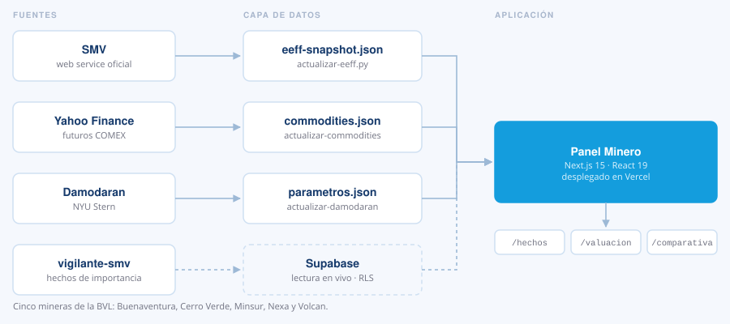
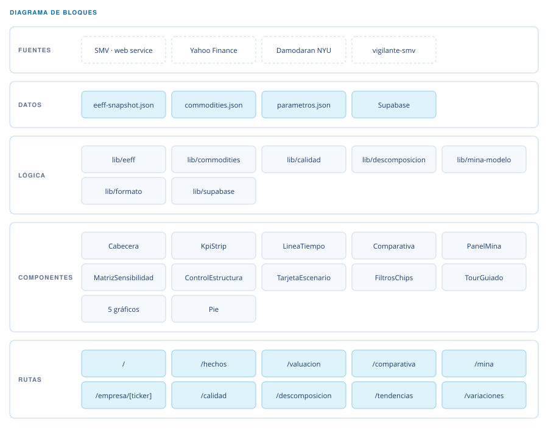

Panel Minero
Reporte financiero del sector minero peruano, con datos que se actualizan solos.

Qué es
Reúne los estados financieros de las cinco mineras líquidas de la Bolsa de Valores de Lima —Buenaventura, Cerro Verde, Minsur, Nexa y Volcan— los precios de los metales y los parámetros de valuación, y los presenta en un panel navegable.
El concepto. El sector publica muchísima información, pero dispersa: los estados financieros están en la SMV, los precios en los futuros del COMEX y los parámetros de valuación en las tablas de Damodaran. El panel une las tres fuentes y calcula el costo de capital reapalancando la beta con el D/E real de cada empresa, no con un promedio genérico.
- Next.js 15
- React 19
- Supabase
- Python
- Vercel
Cómo está compuesto
Ninguna vista calcula: la matemática vive en lib/ y los componentes solo dibujan.

10 rutas
Cada una responde una pregunta distinta del sector.
17 componentes
Cinco de ellos son familias de gráficos reutilizables.
7 módulos de lógica
Ningún componente calcula: la matemática vive en lib/.
3 scripts de datos
Regeneran los seeds de EEFF, commodities y parámetros.